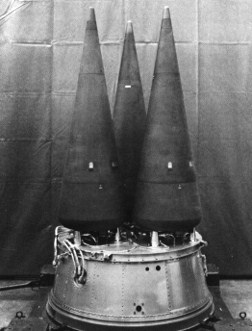
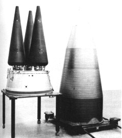
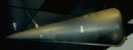

Last updated 1 September 2001
|  |  |
|  Click for larger image | |
Three Mk-12A RVs mounted on bus, Minuteman III shroud at right in second picture. The W-78 warhead itself is not visible.
The W-78 is the warhead used with the Mk 12A reentry vehicle which arms a portion of the Minuteman III ICBM force. Designed for use on MIRV (multiple independently targeted reentry vehicle) bus upper stage. The W-78 replaced part of the W-62 to provide an increased hard target kill capability by increasing both accuracy and yield.
| Yield | 335-350 Kilotons |
|---|---|
| Weight | 700-800 lb |
| RV Length | 71.3 in (181 cm) |
| RV Base Diameter | 21.3 in (54.1 cm) |
| Warhead Length | 67.7 in (172 cm) |
| Warhead Diameter | 21.3 in (54.1 cm) |
| Number In Service | 920 |
Two stage radiation implosion weapon.
RV CEP (circle error probability) is 720 feet
RV carries penetration aids (decoys etc.).
Contains plutonium as primary fissile material
Fissile core is beryllium reflected
Deuterium-tritium boosted
Probably contains lithium-6 (95% enrichment) deuteride fusion fuel
Minuteman III ICBM. Each missile carries up to three W-78s, and is based in a hardened underground silo.
Designed and developed by Los Alamos National Laboratory (LANL)
The W-78 is based on earlier secondary stage designs, probably including the W-50 Pershing warhead. The primary of the W-78 has been test fired, but the warhead has never been successfully tested at full yield. The W-78 prototype was first fired shortly before the May 1976 Threshold Test Ban Treaty went into effect, possibly in Keelson (4 February 1976) at 200 Kt, which was apparently a disappointing yield. Redesign followed, and LANL challenged LASL's estimate of the design's yield capability. Following a special review by a panel headed by former LLNL director John Foster which supported LASL's claims, production engineering was resumed.
| July 1974 | Development engineering begun at LANL |
|---|---|
| November 1975 | Production engineering begun |
| February 1976 | Production engineering suspended |
| March 1977 | Production engineering resumed |
| August 1979 | First production units completed |
| September 1979 | Quantity production begins |
| October 1982/th> | Quantity production ends |
Initial manufacture August 1979
Initial deployment in December 1979, replacing W-62s already deployed on Minuteman IIIs. Deployment completed in February 1983.
1083 W-78 warheads have been manufactured.
Currently in service: 920 warheads
Some of these warheads will probably continue in service under START II, the reminder will be kept in the ready "hedge" stockpile.
{kind=link}